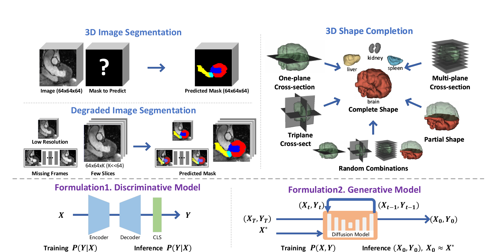
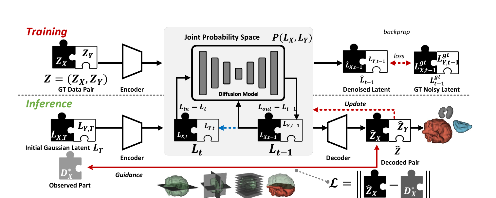
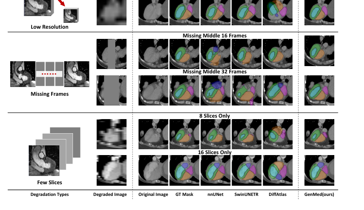
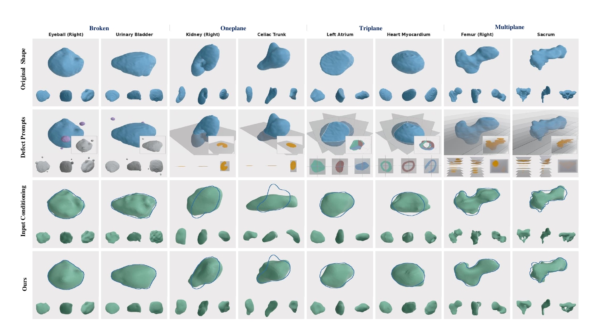
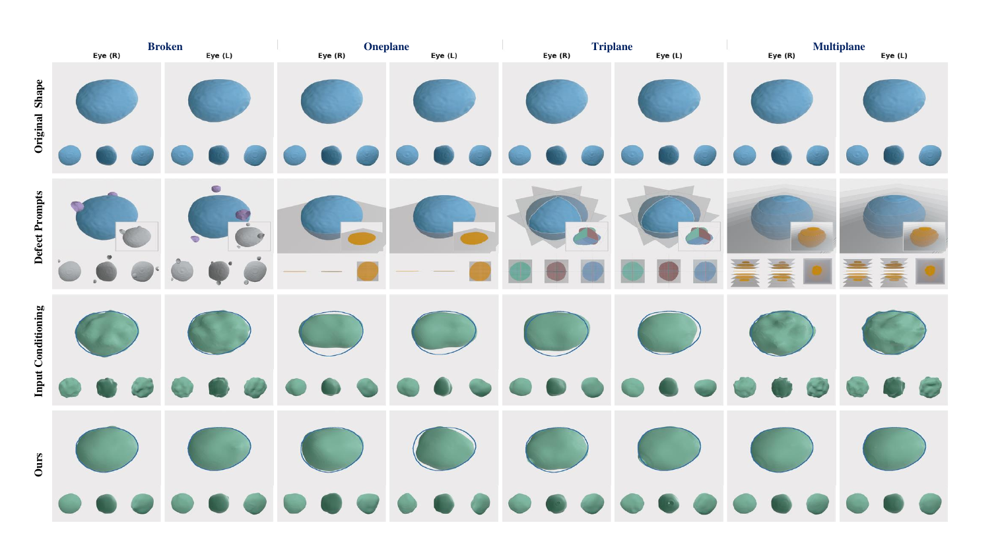
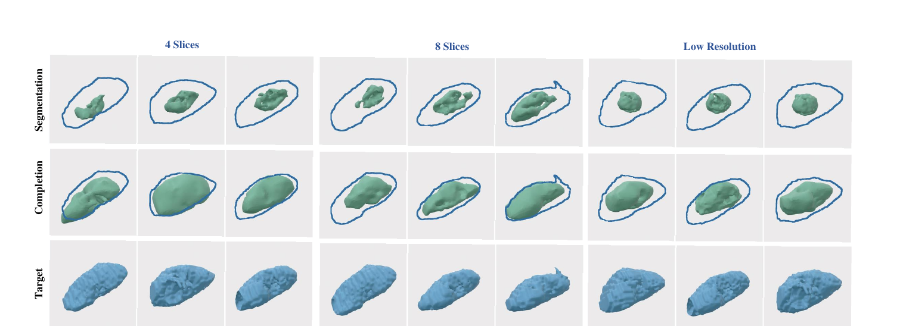

One diffusion model of the joint distribution P(X, Y), steered at test time — turning rigid input→output prediction into flexible, training-free output optimization.
∗Equal contribution · ✉Corresponding author · Fellow, IEEE
1CVLab, EPFL · 2Fudan University · 3Beihang University · 4ELLIS Institute Finland & Aalto University · 5The Hong Kong Polytechnic University

Abstract
Data-driven medical AI is traditionally framed as a discriminative mapping from an input X to an output Y via a learned function f — a formulation that generalizes poorly across the heterogeneous data and modalities of real clinical settings. We propose a fundamentally different, generative paradigm: we model the joint distribution P(X, Y) with a diffusion model and reframe inference as a test-time output optimization problem.
By guiding the generative process to match observed inputs, GenMed enables flexible, gradient-based conditioning at inference time — without architectural changes or retraining — and naturally supports arbitrary, previously unseen combinations of observations. Extensive experiments demonstrate strong performance on standard and cross-modality segmentation, few-shot segmentation with only 2 or 4 training samples, degraded-input segmentation, shape completion from sparse and partial observations, and zero-shot transfer to a new domain.
To support these evaluations, we curated and released a large-scale text–shape dataset derived from MedShapeNet. Our results highlight the versatility of generative joint modeling as a foundation for reusable, task-agnostic medical AI systems.
Method
GenMed trains an unconditional diffusion model over data pairs (X, Y). At inference, a known observation X∗ guides sampling toward a consistent pair (X′, Y′) with X′ ≈ X∗ — so the model is trained once and conditioned on any signal afterwards.

Modeling the joint distribution removes the need for a dedicated input-conditioning encoder, so a single model serves many tasks and any combination of observations.
A soft loss steers both paired variables together (GenMed-Full), avoiding the semantic gap of naive guidance and adapting to new inputs purely at test time.
Works directly on voxels for segmentation, and on encoded latents for 3D shapes — deferring decoding to the end of the denoising trajectory for stable shape completion.
Results · Segmentation
A model trained on full 3D volumes transfers — with no retraining — to a different modality, to as few as 2–4 training samples, and to severely degraded inputs (low resolution or missing slices).
| Method | Standard (TS) | CT → CT | Zero-shot CT→MRI | 2-shot CT |
|---|---|---|---|---|
| nnU-Net | 83.7 | 62.0 | 35.3 | 47.0 |
| SwinUNETR | 81.4 | 59.8 | 32.3 | — |
| Input-Cond. Diffusion | 81.7 | 55.0 | 31.9 | 41.2 |
| GenMed-Full (Ours) | 85.4 | 83.8 | 59.9 | 77.7 |
Datasets: TotalSegmentator (TS) and MM-WHS. The gap widens dramatically under distribution shift — cross-modality and few-shot — where conditional models lose most of their accuracy.

Results · Shape Completion
A single model trained only on complete shapes completes anatomy from diverse, previously unseen observations — single-, multi-, and tri-plane cross-sections, broken regions, and stochastically sampled corruptions.

| Method | MMD ↓ | COV ↑ | 1-NNA ↓ |
|---|---|---|---|
| SDFusion | 2.07 | 52.33 | 70.44 |
| Diffusion-SDF | 3.19 | 41.05 | 83.49 |
| OctFusion | 8.75 | 24.14 | 87.56 |
| GenMed-Base (Ours) | 1.16 | 52.80 | 66.24 |
A medical-tailored SDF backbone yields higher-fidelity shapes and a generated distribution closer to the real one.
Beyond generation, GenMed turns the same prior into a completion engine. On the hardest multi-plane prompts it reaches 75.9 Dice and the lowest worst-case error (UHD 10.2), surpassing input-conditioning baselines.
A notable finding: for these dense, voxel-level geometric prompts, classifier-free guidance variants underperform direct conditioning — yet GenMed's pairwise formulation adapts naturally, recovering finer boundary detail even when only a single slice is available.

Interactive
Rotate any mesh — all columns stay camera-synced. We compare the ground-truth shape, the input conditioning baseline, and GenMed (Ours), reporting Dice ↑, CD ↓ and UHD ↓ vs. ground truth on each method. The input prompt column colour-codes the actual partial observation.
Drag to rotate · scroll to zoom · meshes are marching-cubes extractions of each model's SDF output; CD/UHD use the paper's metric (×100), Dice on the SDF occupancy.
Gallery
Slide through qualitative results — use the arrows, the dots, swipe, or your keyboard ←/→. Click any panel to enlarge.
Results · Diagnostic Pipeline
The same pairwise paradigm chains two stages — segment the raw scan, then complete the shape with the pretrained prior — transforming corrupted imaging directly into geometrically correct anatomy.

The harder the degradation, the more the pretrained shape prior contributes — KiTS23 is independent of the shape-completion training data, so no leakage occurs.
Citation
@article{genmed2026, title = {GenMed: A Pairwise Generative Reformulation of Medical Diagnostic Tasks}, author = {Zhang, Hantao and Guo, Weidong and Liu, Yuhe and Yang, Jiancheng and Bhagavan, Sathvik and Xu, Mingda and Shi, Danli and Fua, Pascal}, journal = {Preprint}, year = {2026} }